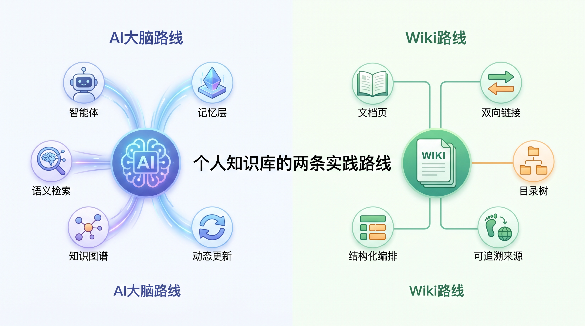
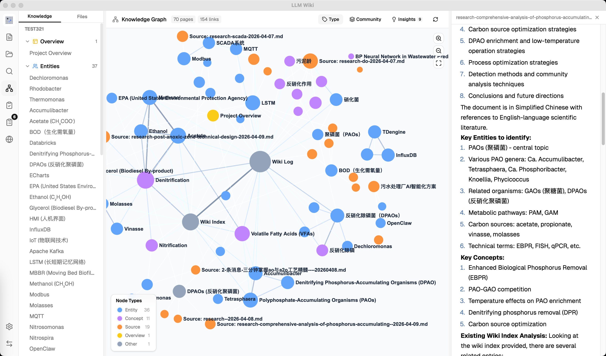
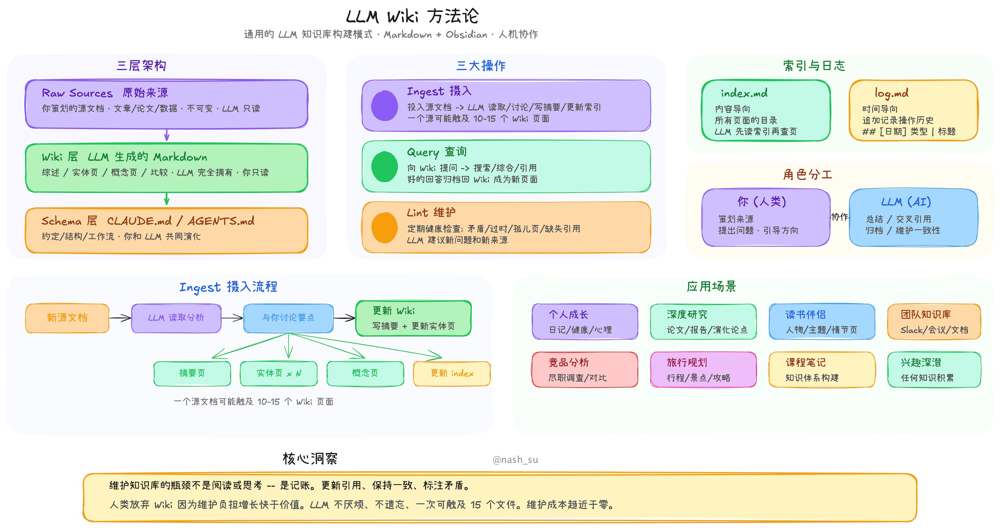

💡 先说结论：
如果你想做的是“让 AI 真能记住你”，看 gbrain。
如果你想做的是“让散落文档自动长成一个 wiki”，看 LLM Wiki。两者都不是传统意义上的笔记软件，它们解决的是同一个老问题：笔记很多，真正能在需要时被调出来的太少。
很多人以为个人知识库的核心是“收集”，其实这一轮变化的关键已经不是你存了多少，而是 知识能不能被 AI 调用、复用、更新。
Karpathy 提出的 LLM Wiki 模式把这个转折说得很清楚：知识不该每次提问都从零检索，而应该被“编译一次、持续维护”[1][1]。

你可以粗暴地把它理解为：左边是“会回答的记忆层”，右边是“会长大的 wiki”。
前者优先解决 AI 的失忆问题，后者优先解决资料长期失序的问题。
GBrain 的出发点非常激进：它不是在给人做“更好的搜索”，而是在给 AI Agent 做一个 会综合、会回忆、会补缺口 的长期记忆层。
官方 README 里最核心的设计，就是把 search 和 think 明确分开，并在底层放进混合检索、知识图谱、MCP 接入和夜间 dream cycle 维护机制[2][2]。
这意味着 GBrain 的实践方式更像在搭一套“个人脑后台”。
你把会议、邮件、笔记、想法不断 capture 进去，系统一边把 Markdown 当作系统记录，一边用图谱和检索把分散信息重新组织起来。
当你问“明天和某人开会前我该知道什么”，它追求的不是给你一堆 chunk，而是直接给你一段带上下文的准备稿[2][2]。
它的强项也因此非常鲜明：更适合高频使用 AI Agent 的人。
如果你本来就在用 Claude Code、Codex、Cursor，或者你想让 Agent 不再“每次开口都像失忆”，GBrain 的味道会很对。
它支持本地 PGLite 快速起步，也支持 Postgres + pgvector 往更大规模走，本质上是在把个人知识库从“资料柜”推向“记忆基础设施”[2][2]。
但 GBrain 的隐藏税也不低。
它对使用者默认有更强的工程心态：要接受 schema、接受 Agent-first 的工作方式、接受持续运行和维护；越想把它用成“全天在线的第二大脑”，越接近一套系统工程，而不是一个装上就完事的桌面工具。
截至 2026-06-05，官方 Releases 页面显示 gbrain 约 19k Star，默认 schema 已经迭代到 v0.41.22 对应的 gbrain-base-v2，更新速度很快，说明它不是概念 Demo，而是在快速打磨中的生产型项目[3][3]。
LLM Wiki 的思路更容易被多数知识工作者接受：你不必先成为 Agent 工程师，而是先把 PDF、DOCX、Markdown、网页剪藏这些原始材料喂进去，让系统自动长出一个 可浏览、可互链、可追溯来源 的持久 Wiki。
官方把它定义为“不是传统 RAG，而是让 LLM 增量构建并维护一个 persistent wiki”[4][4]。

LLM Wiki 把“知识树 + 聊天 + 预览 + 图谱”合在一个桌面工作台里，降低了非工程用户的进入门槛，也让“资料如何长成体系”这件事第一次有了比较完整的产品形态[4][4]。

它的实践路径也更“产品化”。
项目把 Karpathy 的方法论真正落成了桌面应用：底层用了两步 ingest，把“先分析再生成”拆开处理，再把知识图谱、社区发现、深度研究、审阅队列、Chrome Web Clipper 一起做进来。
你看到的不是一个聊天壳，而是一整套围绕“文档如何变知识”的工作台[4][4]。
这条路线特别适合两类人：一类是已经堆了很多资料，但迟迟没空整理的人；另一类是喜欢“看页面、看目录、看链接关系”多过“全程对话”的人。
因为它保留了 wiki 的结构感，又把维护工作尽量交给 LLM，所以它对研究、写作、专题沉淀都很友好。
当然，它也有自己的代价。
LLM Wiki 的核心收益来自“先编译知识”，因此首次 ingest 的 token 成本、时间成本、错误传播风险都会比普通 RAG 高；如果你的资料库巨大而且很杂，仍然需要定期 review，避免错误链接和错误总结被长期沉淀。
从产品成熟度看，LLM Wiki 已经不是一句方法论口号：官方仓库说明里，它是一款基于 Tauri v2、React 19、Rust 与 LanceDB 的跨平台桌面应用，支持主流模型接口与 Ollama，本地安装门槛比 Agent 系统更友好[4][4]。
公开分发页面已更新到 0.4.7 版本[5][5]。
| 维度 | GBrain | LLM Wiki | 我会怎么理解 |
|---|---|---|---|
| 第一性目标 | 给 AI Agent 一套长期记忆层，让它会检索、会综合、会发现知识缺口[2][2] | 把原始资料持续编译成结构化 Wiki，让知识先成形再被查询[4][4] | 一个偏“脑”，一个偏“书”。 |
| 知识的最小单元 | Markdown 页面 + 类型化实体 + 图谱边 + 可被 MCP 调用的操作[2][2] | Raw Sources / Wiki / Schema 三层结构，围绕页面、目录、索引和日志展开[4][4] | 前者更偏系统对象，后者更偏文档对象。 |
| AI 的角色 | 更像“长期记忆管理员”和回答合成器[2][2] | 更像“Wiki 编辑、整理员和研究助手”[4][4] | 前者在回答时更强，后者在整理时更顺。 |
| 上手方式 | 适合从 CLI、MCP、Agent 平台切入，工程味更重[2][2] | 适合直接装桌面应用，导入文件后开始跑 ingest[5][5] | 一个更像搭基础设施，一个更像装工作台。 |
| 最适合的人 | 重度 Agent 用户、开发者、需要“跨会话记忆”的高信息工作者 | 研究者、内容创作者、知识整理者、想把资料长期沉淀成可浏览结构的人 | 你越依赖 Agent，越偏向 gbrain；你越依赖文档视图，越偏向 LLM Wiki。 |
| 隐藏成本 | 工程配置、schema 心智、持续维护与运行成本更高 | 首次编译成本更高，仍需人工复审，超大资料库需要治理 | 两者都不是“零维护”，只是维护税长在不同位置。 |
⭐ 一句掏心窝建议：
如果你现在的痛点是“AI 老忘事”，先看 gbrain。
如果你现在的痛点是“资料太散，根本长不成体系”，先看 LLM Wiki。真正糟糕的不是选错工具，而是拿“文档型方案”去解决“Agent 记忆问题”，或者反过来。
谁适合直接上 GBrain：
谁更适合先上 LLM Wiki：
第一步，不要一上来就想“全量迁移”。
先挑一个主题库试点，比如工作复盘、行业研究、论文阅读或客户会议纪要，让系统先在一个小范围里跑出手感。
第二步，按你的工作方式选路线：对话驱动的人先上 gbrain，浏览驱动的人先上 LLM Wiki。
这里最怕的不是技术门槛，而是心智错配：明明喜欢页面导航，却强迫自己把一切都做成 Agent；明明想让 AI 帮你长期记忆，却还在文件夹和标签里死磕。
第三步，把“是否节省认知切换”当作唯一 KPI。
一个好的个人知识库，不该只是让你多存点东西，而应该在你写方案、开会、做研究、回忆上下文时，少切几个窗口，少问几遍同样的问题。
最后给一句不那么讨好、但更实用的结论：
个人知识库的尽头不是收藏夹，也不是第二个 Notion，而是让你的知识资产真正进入工作流。
从这个角度看，gbrain 和 LLM Wiki 都值得试，但它们代表的是两种完全不同的未来：一个把知识库做成 AI 的脑后皮层，一个把知识库做成持续生长的数字百科。
[1] [1]: https://gist.github.com/karpathy/442a6bf555914893e9891c11519de94f
[2] [2]: https://github.com/garrytan/gbrain
[3] [3]: https://github.com/garrytan/gbrain/releases
[4] [4]: https://github.com/nashsu/llm_wiki
[5] [5]: https://winpkg.com/apps/nashsu.LLMWiki